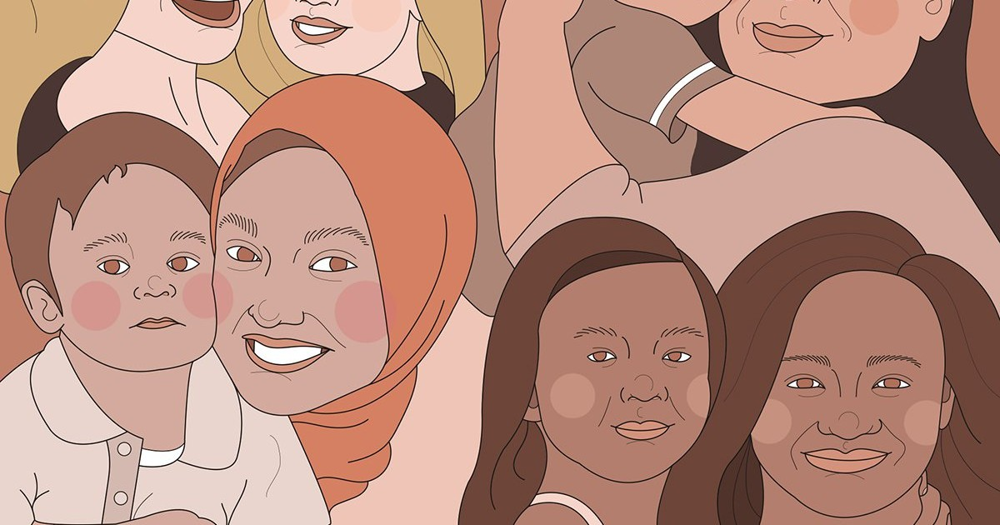

If you were to take a look at all of American history, you would ultimately be confronted by the fact that women have been a pillar to societal functions. Though some historical recordings paint women as background characters in all of the biggest stories, there is a very clear message: the country could not have functioned without the support of women.
Take World War II for example: while thousands of men were away serving in the military, women took on all of the labor-intensive jobs that often led to the production of necessities. When one thinks of World War II, the imperative work of women is often overlooked. Even when looking at more recent times, take single parent households as an example of the importance of women. The U.S. Census Bureau recorded around 10.7 million single parent families, and 80.5% of these are headed by single mothers. Even on a more global scale, similar statistics exist. The UN reported more than 100 million mothers raising their children alone. In retrospect, we should be actively working to bring more light to conversations revolving around women.
Another thing regarding women that is often overlooked and deserves more attention is maternal mortality across the country and as a global concern. This issue is one that actively harms women, the group that essentially upholds the nation. Women are always thought of as home-makers and the pillar of households, but how can they be expected to perform these roles when such great risks exist around them?
What is maternal mortality?
Maternal deaths are defined by the World Health Organization as “the death of a woman while pregnant or within 42 days of termination of pregnancy, irrespective of the duration and the site of the pregnancy, from any cause related to or aggravated by the pregnancy or its management, but not from accidental or incidental causes. You may be wondering how frequently such tragedies occur. As recorded by the WHO, every single day in 2017, around 810 women died from preventable causes related to pregnancy and childbirth. Around 94% of maternal deaths take place in lower middle-income countries. More recent statistics show that in 2019, 754 women died of maternal-related mortality in the United States, which was nearly a 100 person increase from the previous year.

The US Department of Health and Human Services (HHS) has taken notice of this drastic increase and has made plans to curb the issue. HHS made the decision to provide around $200 million to assist in efforts to decrease material and race-based disparities. Ultimately, this funding will provide the Maternal Mortality Review Committees with the ability to expand, expand on access to early childhood development experts in pediatrician offices, and will encourage the implementation of implicit bias training for those pursuing careers in healthcare.
Statistics in relation to race
In 2019, non-Hispanic black women saw a maternal mortality rate of 44.0 deaths per 100,000 live births. This statistic is 2.5 times the rate for non-Hispanic white women (17.9) and 3.5 times the rate for Hispanic women (12.6) The increase in the maternal mortality rate from 2018 (14.9) to 2019 for non-Hispanic white women was statistically significant. According to the CDC’s Pregnancy-Related Mortality Surveillance System, the pregnancy-related mortality ratio (PRMR) for black women with at least a college degree was 5.2 times that of their white counterparts. Non-Hispanic black (black) and non-Hispanic American Indian/Alaska Native (AI/AN) women experienced higher PRMRs (40.8 and 29.7, respectively) than all other racial/ethnic populations (white PRMR was 12.7, Asian/ Pacific Islander PRMR was 13.5 and Hispanic PRMR was 11.5).This was 3.2 and 2.3 times higher than the PRMR for white women. As we go up the age scale, this gap increases as well.
What is causing these deaths?
Complications may occur during or after pregnancy and/or childbirth. Such complications are considered to be treatable, however, it is entirely possible for them to become serious problems if the woman is not receiving adequate care. Severe bleeding following childbirth, infections following childbirth, high blood pressure forthe duration of the pregnancy, delivery complications, and unsafe abortions are leading causes of maternal mortality. Receiving the necessary care for these issues may prove to be life-saving, but factors such as location in relation to healthcare facilities, poverty, or cultural beliefs can make it difficult for a woman to have access to this care. Racial bias within medicine still exists, too. There is a myth that states that black people have a higher pain tolerance and therefore do not need the same standard of care. It is said that some medical students and residents still subscribe to this notion. When we think of receiving medical care, we typically associate this with positive emotions. The sad reality is that many groups, particularly people of color, do not feel as though they are seen and heard in the healthcare system. Physicians take the Hippocratic Oath which essentially is a promise to uphold ethical standards in their practice. Too often do we see providers not upholding these standards-- change is needed in this area, expeditiously. This ties into how healthcare is delivered to women of color in regards to maternal matters.
How can these disparities be addressed and resolved?
The first step in addressing these disparities is acknowledging the present danger within them. From there, it then becomes possible for solutions to be created. Of course, solving these issues would require collaboration between the different components of public health. Hospitals and other healthcare facilities must have a set of standards that are implemented equitably. There should be zero-tolerance for implicit bias-driven ideas in medicine at all levels, especially in maternal care. Starting with this part of the solution can facilitate more methods as to how these disparities can be effectively quashed.
Take the IAWH Maternal Mortality Quiz
Maternal mortality in the United States and across the globe is very often preventable, yet still this issue is recognized by the World Health Organization (WHO) as a crisis. Take the IAWH Maternal Mortality Quiz to test your knowledge on this subject and learn more about this topic with links to evidence-based resources that you can access after you submit/score your quiz.
To learn more about these issues, refer to the links below.
- Childbirth Risks for Black Women
- Causes of Maternal Mortality and Pregnancy-Related Deaths by Race
- Strides Made Toward Ending Maternal Mortality
This guest blog was written by Amber Sampson, First Year Public Health Scholar at American University in Washington, DC.
References:
https://www.cdc.gov/nchs/data/hestat/maternal-mortality-2021/maternal-mortality-2021.htm
https://www.cdc.gov/media/releases/2019/p0905-racial-ethnic-disparities-pregnancy-deaths.html
https://www.ncbi.nlm.nih.gov/pmc/articles/PMC4843483/
This article first appeared on the IAWH Health blog on October 20, 2021 and is preserved here as part of the IAWH Health Journal archive. Information reflects what was known at the time of publication. This article is for general education and is not medical advice.